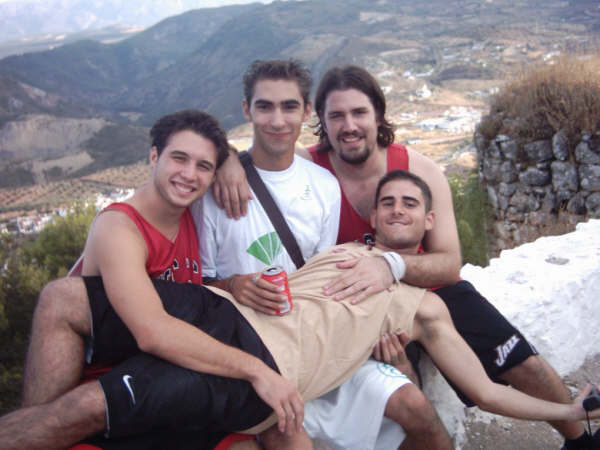
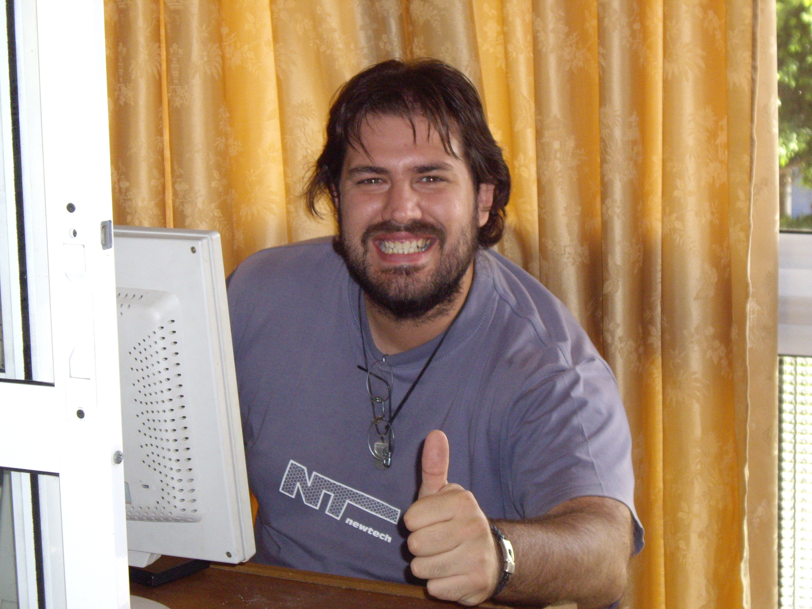
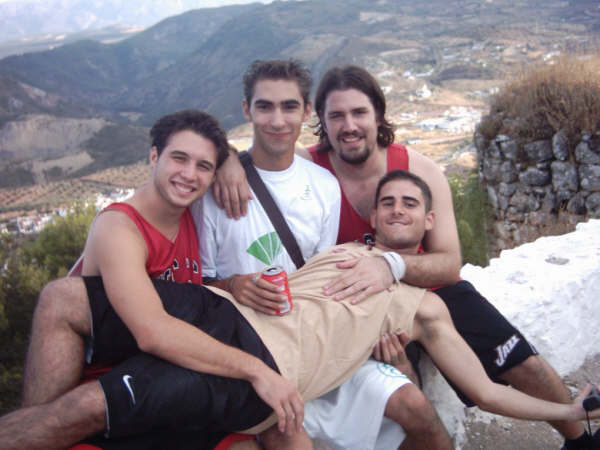
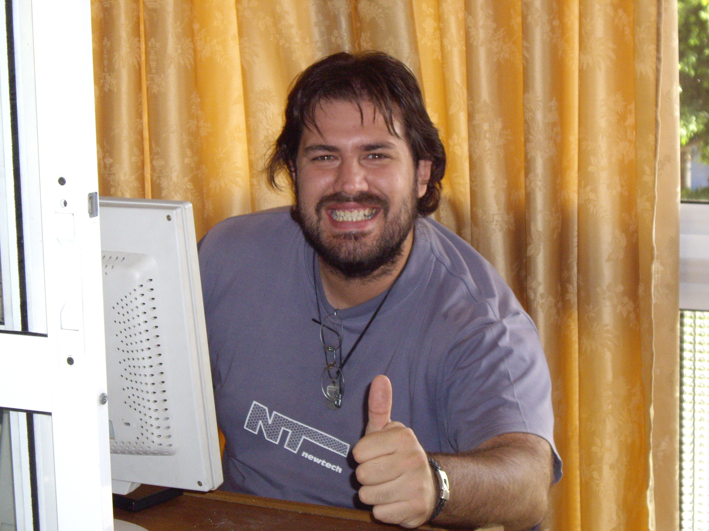

GRACIAS POR ENTRAR A MI PRIMER ACERCAMIENTO AL MARAVILLOSO DESARROLLO WEB
Mi nombre es Manuel Leal Medina y actualmente estoy estudiando 1º de Desarrollo de Aplicaciones Multiplataforma. Ya llevo unos
años haciendo un acercamiento al mundo de la Informática y más concretamente al Desarrollo de Aplicaciones y páginas Web. Es realmente
un mundo fascinante lleno de posibilidades.
Debería hablar aquí sobre que cuando sea mayor (aunque ya tenga unos nada desdeñables 42 años) me gustaría ser un super
programador que va a inventar un programa que cambiará vidas y me hará muchimillonario. Pero la verdad es que, aunque sí que es
algo que quiero experimentar, y me refiero a trabajar en una empresa y vivir de primera mano lo que es la vida de un programador,
lo que más me inspira ahora mismo es ver a diario la labor tan increible que llevan a cabo los profesores y profesoras
que pululan por los pasillos. ¿Quiero decir con esto que me gustaría terminar mis días enseñando a nuevas generaciones?. Sólo
el tiempo lo dirá.
Pero tiene pinta.
 


